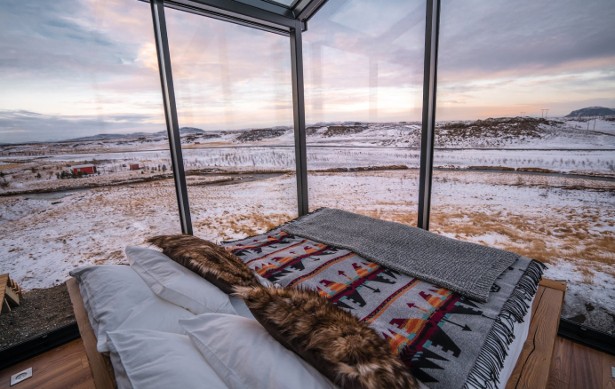
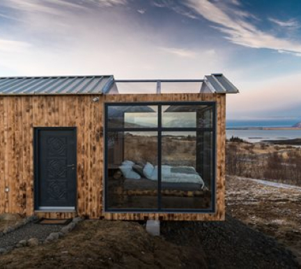
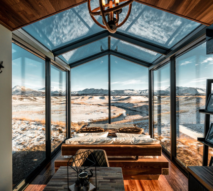
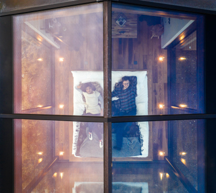
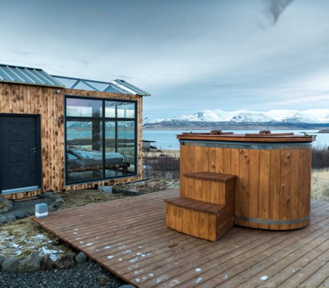

Три ексклюзивні та комфортабельні yjvthb Løvtag, Et, Ro_Ly, спроектовані архітектором Сігурдом Ларсеном. Усі вони мають відкритий простір з двоспальним ліжком, двоспальним диваном-ліжком, кухнею, окремим туалетом і душем на відкритому повітрі. На даху, оточена кронами дерев, розташована тераса, яка знаходиться близько дев’яти метрів над землею. Котеджі побудовані навколо високих старих дерев, які проходять через весь котедж від підлоги до стелі.





Три ексклюзивні та комфортабельні yjvthb Løvtag, Et, Ro_Ly, спроектовані архітектором Сігурдом Ларсеном. Усі вони мають відкритий простір з двоспальним ліжком, двоспальним диваном-ліжком, кухнею, окремим туалетом і душем на відкритому повітрі. На даху, оточена кронами дерев, розташована тераса, яка знаходиться близько дев’яти метрів над землею.